音声SNSのプロダクトデザイン
- iOSアプリ
- 自主制作
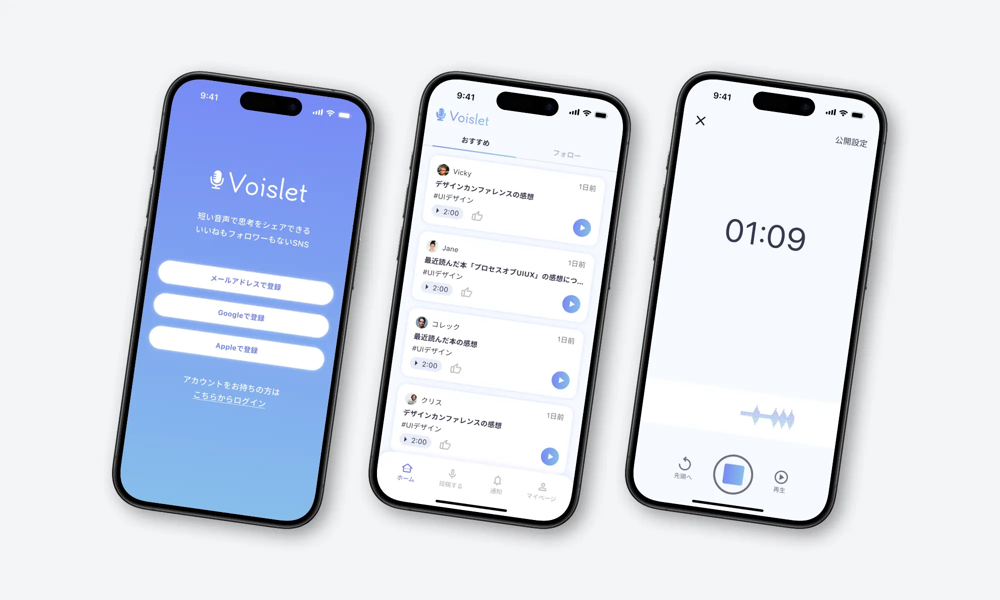
音声SNSアプリを自主制作しました。以下で、制作サマリーと制作プロセスを紹介します。
なお、この音声SNSというテーマ自体は、BONOというオンライン学習サービスの課題として取り組んだものです。課題の指示としては、新規登録画面・フィード画面・投稿作成画面といった主要画面のUIをデザインするという内容でした。 しかし、より実践的なアウトプットにするため、本課題ではリサーチやユーザーモデリングから着手し、コンセプト策定、情報設計、そしてビジュアルデザインまで一連のデザインプロセスを通して制作を行いました。
- カテゴリー：iOSアプリ
- 制作種別：自主制作
- 担当領域：リサーチ、モデリング、要件定義、情報設計、ビジュアルデザイン
- 使用ツール：Figma
- 制作期間：1ヶ月
どんなアプリか
本プロダクトは、心理的に安全な環境で、思考途中のアイデアや感想を気軽に共有できる音声SNSです。 近年のSNSでは、批判やマウント、バズを前提とした過激な投稿が増えたことで、ユーザーにとって投稿の心理的ハードルが高くなっています。 その結果、多くのユーザーは思ったことを投稿しなくなり、SNSを見るだけの存在になったり、あるいはSNSから離れてしまう状況が生まれています。 そこで、本プロダクトではこの課題に対して「心理的安全性」と「低コスト投稿」を軸に設計することで、思ったことを気軽にアウトプットできる体験を提供することを目指しています。
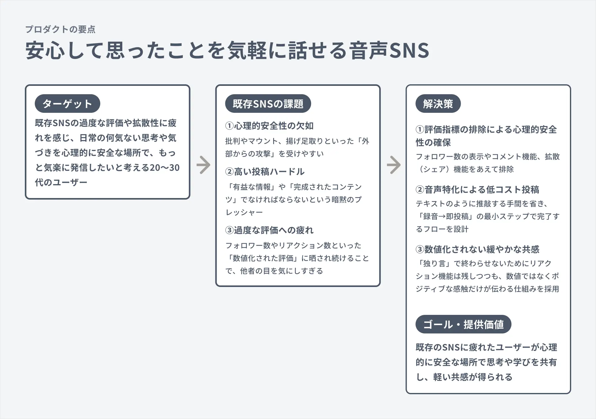
プロトタイプ/figmaファイル
音声SNSのFigmaファイルはこちら
要件定義、情報設計、ビジュアルデザインのデータを公開しています
デザインのポイント
ポイント①：心理的安全性の確保と他ユーザーからの反応のバランス
本プロダクトでは、ユーザーが安心して思ったことを共有できるよう、心理的安全性を重視した設計を行いました。 まず、フォロワー数の表示やコメント、拡散といった評価や対立が生まれやすい機能はあえて排除することで心理的な安全性を確保。 一方で、完全に他ユーザーからの反応がないと、日記と変わらず、投稿モチベーションの維持も困難になるため、誰が反応したかや反応数が分からないリアクションのみを受け取れる仕組みにすることで、完全な独り言にはならず、軽い共感だけを感じられる体験を目指しています。
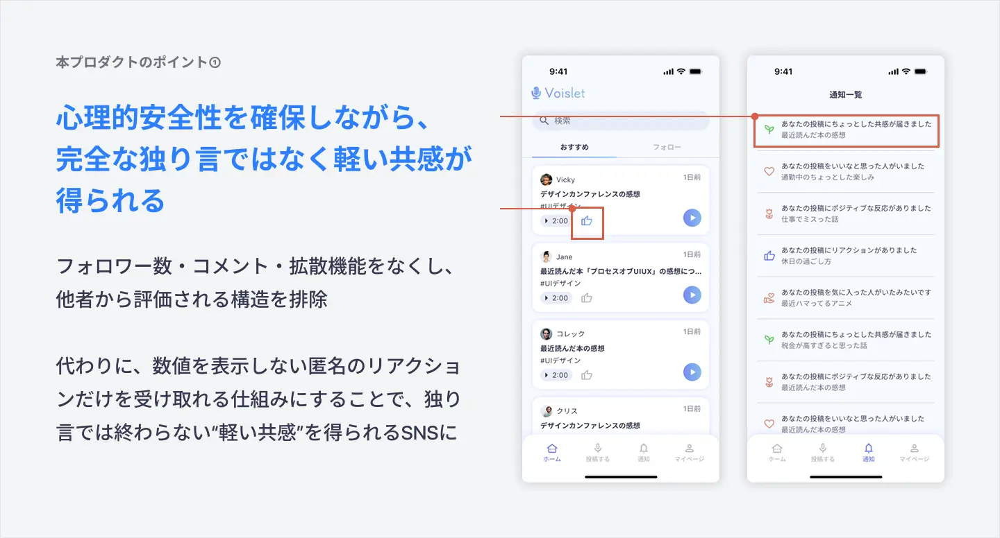
ポイント②：低コストでの投稿
思いついた瞬間に投稿できるよう、投稿フローもできるだけシンプルに設計しました。 投稿は「録音 → タイトル・タグ入力 → 投稿」の最小ステップで完了できるようにし、不要な情報や設定項目を削減しています。 さらに確認画面などの余計な操作も極力省くことで、アプリを開いてから短時間で投稿できる、低コストな投稿体験を実現しています。
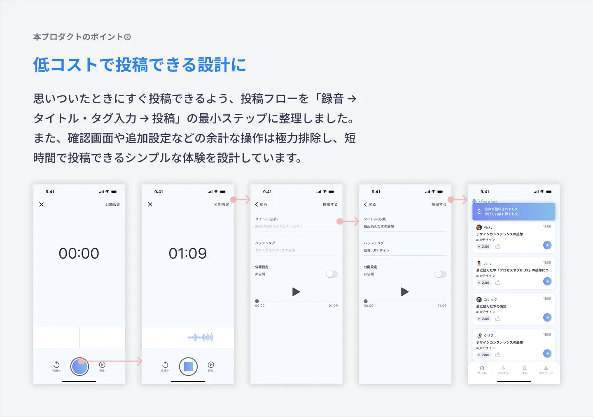
デザインプロセス
以降のセクションでは、本プロダクトの詳細なデザインプロセスを紹介したいと思います。
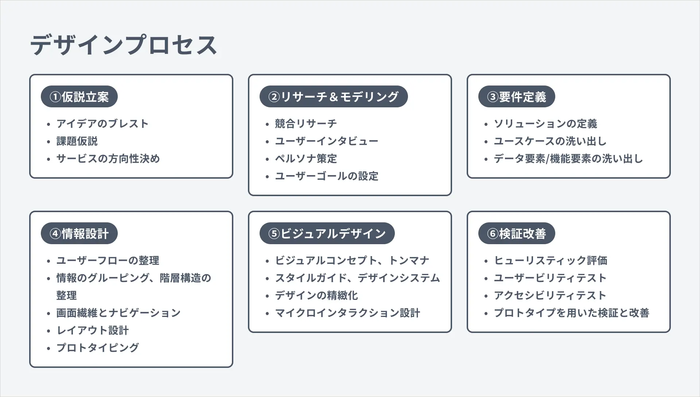
1. 仮説立案
1-1. アイデアのブレスト
まず、「音声SNS」というテーマからブレインストーミングを行い、サービスの方向性を模索しました。 検討の結果、「日々の学びや体験を気軽に投稿できる音声SNS」という大まかなコンセプトの方向性を策定し、詳細な設計へと進めました。
1-2. 課題仮説とプロダクトの方向性決め
近年の主要なSNSでは、インプレッション目的の過激な投稿やネガティブな情報が溢れ、ユーザーの「SNS離れ」が加速しています。 発信側は批判や揚げ足取りを恐れて投稿を躊躇し、閲覧側も殺伐とした空間に疲れを感じているのが現状です。
かつてのSNSが持っていた「何気ない日常を共有し、穏やかな反応を楽しむ居心地の良さ」が失われつつある中で、 「批判や過度な評価から守られ、心理的安全性が確保されたプラットフォーム」には需要があるのではないかと考えました。
そこで、「批判や過度な評価から守られ、心理的安全性が確保されたプラットフォーム」で「日々の学びや体験を気軽に投稿できる音声SNS」をサービスの方向性として定め、以降のリサーチに進みました。
2. リサーチ＆モデリング
プロダクトの詳細を詰めていくため、競合サービスのリサーチとユーザーインタビューを行いました。
2-1. ユーザーインタビュー
20〜30代の男女6名を対象に、既存SNSの利用実態と、音声による発信への抵抗感・期待値について調査を実施しました。以下がインタビュー結果の要約です。
1. 既存SNSの課題
- 心理的安全性の欠如： 現在のSNS環境（特にXやThreads）は、高い拡散性を持つ一方で、批判や揚げ足取り、インプレッションを目的とした過激な投稿が溢れかえっている。 その結果、ユーザーが心理的な攻撃を受けるリスクが増大しており、多くの人々が自己防衛のために発信を控え、SNS離れを加速させている
- 投稿へのプレッシャー： note等のコンテンツ系SNSでは「作り込まれた有益な内容」という暗黙のクオリティ期待があり、日常的な投稿には向かない
- コミュニティ内での自意識： 閉鎖的な環境（Slack等）でも、「無知だと思われたくない」「間違ったことを言えない」「反応がないと気まずい」といった心理的ハードルが依然として存在し、結局はごく一部の親しい知人同士の交流に留まり、広がりが生まれにくい
2. ユーザー行動のジレンマ
インタビューの結果、ユーザーは次のような矛盾した欲求を持っていることがわかった。
・批判や評価は怖いので投稿したくない
・しかし誰にも見られない発信では意味を感じない
・誰かに聞いてもらいたい
・でも評価されたくない
つまり、「評価や批判は怖いが、共感は欲しい」という状態。
3. 音声SNSという仮説に対するユーザーの反応
「心理的安全性が確保されたプラットフォームで日々の学びや体験を気軽に投稿できる音声投稿SNS」というプロダクトの仮説に対しては、 まずポジティブな意見として、話すという行為が思考の整理に繋がると期待する声や、声によるアウトプットするなら文字入力よりも労力的には楽であるといった、気軽な発信手段としての可能性を感じる声が挙がりました。
一方で、自分の声を世に公開することへの抵抗感や、既存のサービスとは異なる体験ゆえに実際の利用イメージが湧きにくいといった懸念も示されています。 さらに継続性の観点からは、他者からの評価は避けたいものの、反応が一切得られない環境では単なるボイスメモと変わらず、発信し続ける動機が保てないのではないかという課題も浮き彫りになりました。
4. ユーザーのニーズ
ユーザーインタビューから得られたニーズを分析すると、多くのユーザーは自分の思考や感情を誰かに受け止めてほしいという根源的な欲求を抱いていることがわかりました。 その一方で、投稿においては徹底した負担の軽減が求められており、労力をかけず、作り込む必要のない気軽な仕組みが重要視されていることが分かりました。
また、心理的な安全性の確保も不可欠であり、批判やマウント、過度な評価競争に晒されない環境が強く望まれていることがわかりました。 しかし、単に反応を遮断するだけでは既存のメモ帳や日記と変わらなくなってしまうため、孤独感を解消し、発信を継続する動機となるような「最低限の共感や反応」を得られる絶妙な距離感が必要とされています。
5. インサイト
ユーザーへの調査を通じて得られた深い洞察として、現代のユーザーは「評価を伴わない、純粋な共感」を強く求めていることが明らかになりました。 具体的には、数値や拡散によって評価に晒される既存のSNSでは発信を躊躇してしまい、かといって全く反応が得られない環境では、あえて発信する意義を見出せなくなっています。この「評価のプレッシャー」と「無反応による孤独感」という二極化された現状の狭間に、心理的な安全が守られつつも、穏やかな共感が返ってくる場所が決定的に不足しているという結論に至りました。
つまり、ユーザーの本音は「批判や評価の恐怖から解放され、思ったことをありのままに発信しながらも、最低限の温かな共感だけは受け取れる場所」を求めているのだと言えます。
2-2. ペルソナモデリング
実施したユーザーインタビューから得られた、発信に対する心理的障壁や行動特性を分析し、本サービスの核となるペルソナを定義しました。
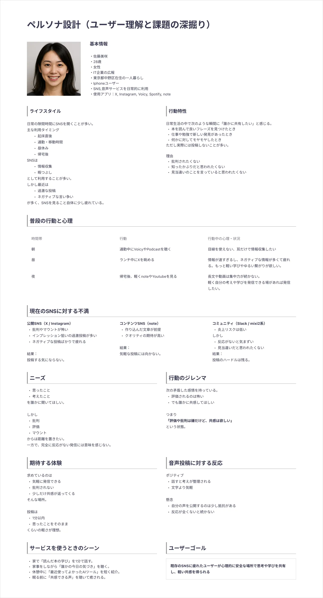
3. 要件定義
まず、これまでの競合リサーチ、ペルソナ、ユーザーゴール等を踏まえ、本プロダクトが提供するソリューションとコンセプトおよび提供価値を定めました。
3-1. ソリューションの定義
これまでのリサーチから得られた「評価への恐怖」と「無反応への孤独感」というジレンマを解消するため、本プロダクトのコンセプトを「心理的に安全な環境で、思考途中のアイデアや感想を気軽に共有できる音声SNS」と定義しました。
既存のSNS環境では、過度な拡散性や数値化された評価が、ユーザーの発信意欲を削ぐ大きな要因となっています。 本プロダクトは、この課題を解決するために、以下の3つのアプローチを具体的なソリューションとして提供します。
① 徹底した心理的安全性の設計
批判や攻撃的なコミュニケーションを構造から排除するため、コメント機能や拡散機能、さらには「フォロワー」という概念そのものを撤廃します。 他者の目を気にすることなく、純粋に自分の思考に向き合える「静かな発信環境」を構築します。
② 思考を妨げないアウトプットの低コスト化
「書く」という作業に伴う心理的・作業的負担を最小化するため、1分程度の短尺音声投稿に特化します。 テキストを推敲する手間を省くことで、思考がまとまりきる前の断片的な気づきを、熱量を保ったまま即座に共有することを可能にします。
③数値化されない「最小限の共感」の提供
完全な独り言で終わらせないためにリアクション機能は維持しつつも、リアクション数は非表示とします。 誰が反応したか、何回反応されたかといった「評価」の側面を削ぎ落とし、ポジティブで穏やかな共感だけが伝わる、依存性の低い心地よい繋がりをデザインします。
3-2. ユースケースの洗い出し
定義したソリューションを実際のユーザー体験に落とし込むため、主要な利用シーンに基づいたユースケースを洗い出しました。 単に機能を羅列するのではなく、「どのような状況で、どのような心理的変化を期待してそのアクションを行うのか」というユーザーの行動文脈を重視して整理しています。
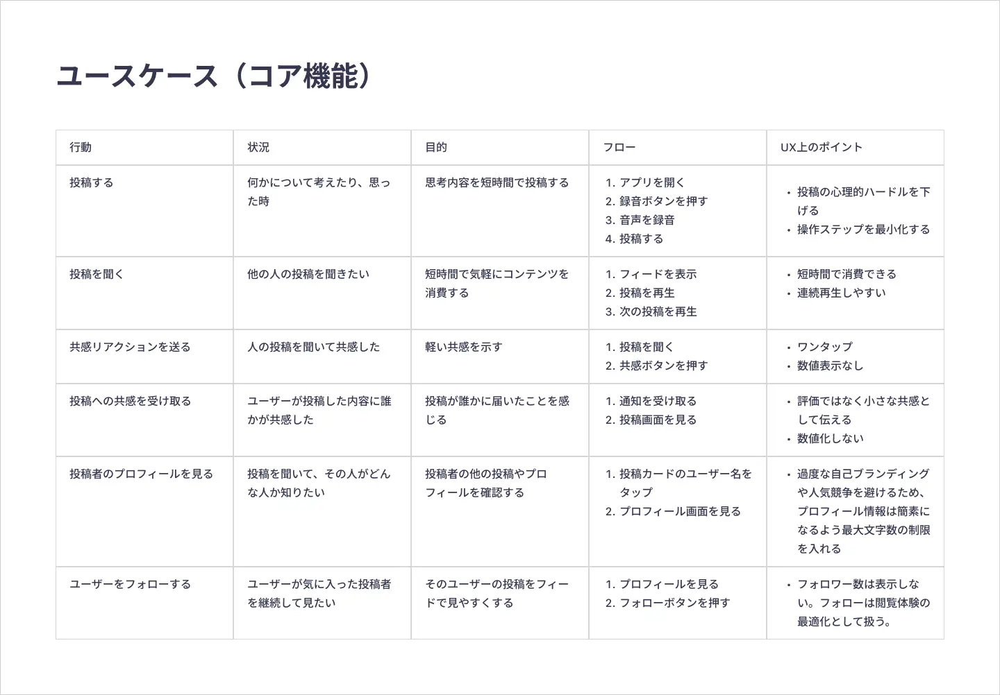
3-3. データ要素・機能要素の洗い出し
ユースケースからUI上で必要なデータ要素と機能要素を洗い出しました。
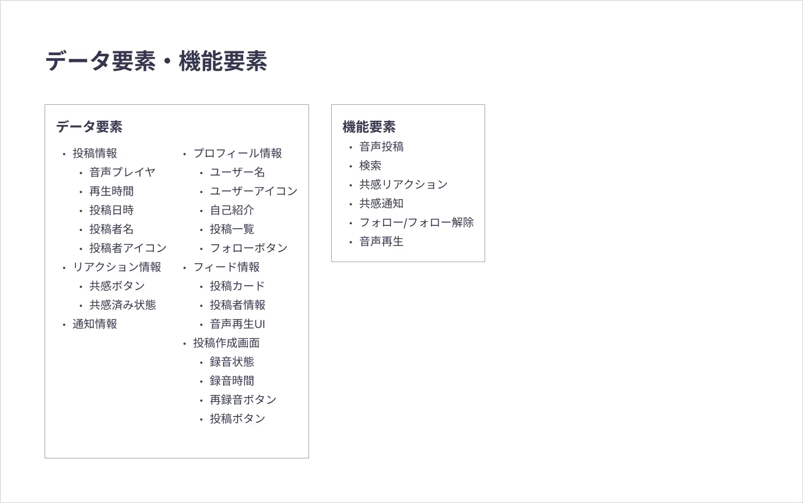
4. 情報設計
要件定義をもとに具体的な情報設計に進みました。
4-1. インタラクション構造の設計
定義したユースケースや各機能、データ要素に基づき、プロダクト全体のインタラクション構造を整理しました。 ユーザーの主要な行動動線に合わせて各画面の遷移関係を定義し、情報や機能のグルーピングを行うことで、階層構造を明確にしています。
具体的には、主要な機能を集約したボトムナビゲーションを起点に、フィード、通知、投稿、マイページの4つのメインセクションを配置しました。 投稿画面はモーダル形式を採用することで、どの画面からでも即座に録音を開始できる設計にしています。 また、マイページ配下にはフォロー一覧やプロフィール編集といった設定関連の機能を階層的に整理し、ユーザーが迷うことなく情報を管理・カスタマイズできる構造を構築しました。
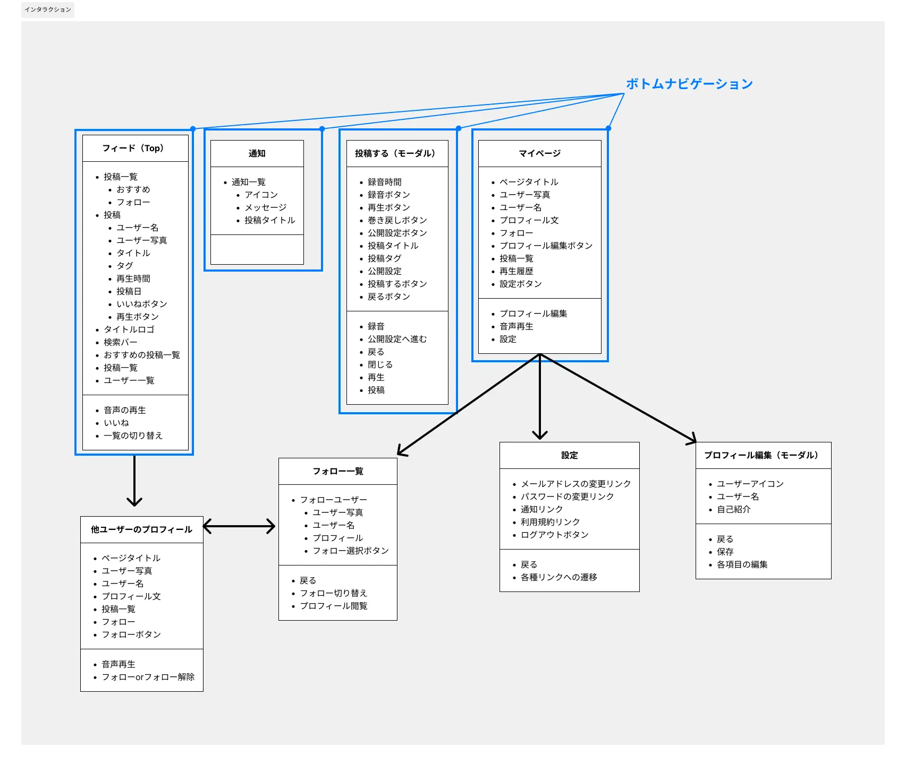
4-2. レイアウト設計
設計したインタラクション構造に基づき、具体的な情報レイアウトや画面遷移のパターンをワイヤーフレームとして形にしました。 各画面の役割を明確にしながら、ユーザーが迷わずに操作できるよう、主要な機能の配置や情報の優先順位を整理しています。 特にホーム画面では、フィードの閲覧から再生、詳細検索、そして他ユーザーのプロフィール確認までをスムーズに繋ぐUIパターンを検討し、操作の心地よさと使い勝手の検証を行いました。
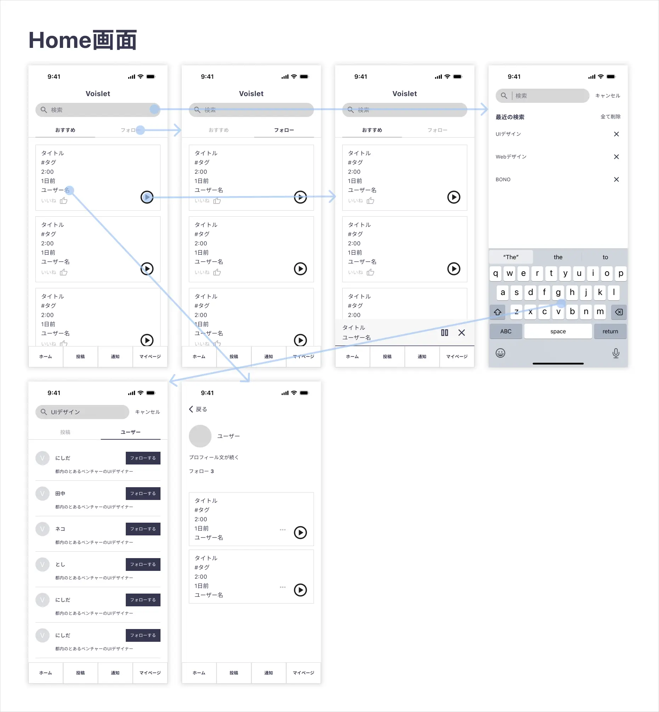
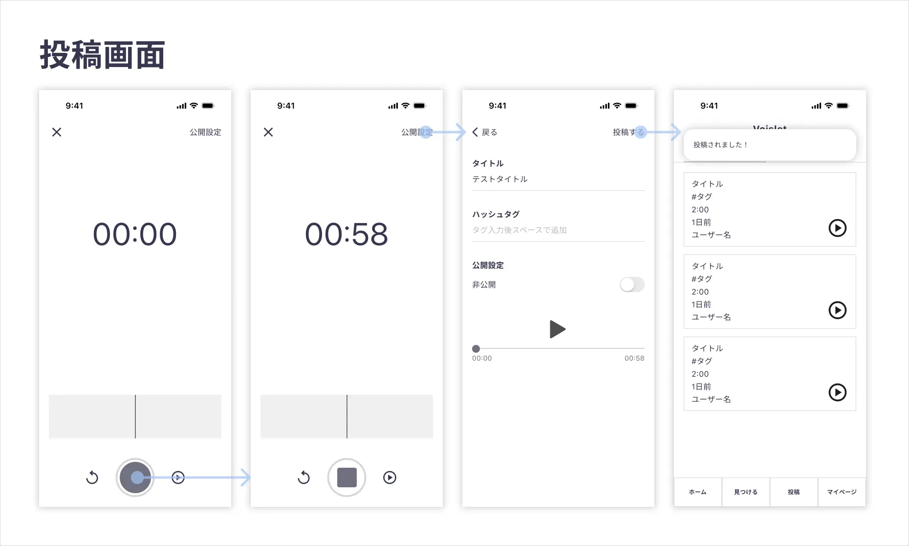
5. ビジュアルデザイン
次に、ビジュアルデザインのフェーズでは、単に見た目を整えるだけでなく、プロダクトの核である「心理的安全性」と「内省」を直感的に感じられる空気感の構築を目指しました。
5-1. トンマナ設計
ビジュアルデザインの構築にあたっては、単なる装飾ではなく、ユーザーが直感的に感じる「情緒的な心地よさ」の軸を明確にすることから始めました。 プロダクトの立ち位置を「評価されるための発信から解放する場所」と定義し、そこから導き出した「静けさ」「解放」「思考」「内省」というキーワードを軸に、視覚的な方向性を精査しています。
このプロセスを経て、配色や形状、余白、動きといった各要素の具体的な方向性を体系化しました。 特に配色の選定においては、複数のカラーパターンを実画面に適用して比較検証を重ねています。 単なる色の好みではなく、どの案が最もコンセプトに深く合致し、かつUI全体の調和やユーザーに与える印象が優れているかを客観的に評価しました。
- 色相：青、静けさや落ち着きを感じさせるトーン。
- 彩度・コントラスト：低めに設定し、情報過多にならない落ち着いた印象に
- 形状：角を削った曲線や角丸を多用し、安心感を演出
- 質感：透明感や水面のような質感で、“声の波紋”を暗示
- 余白：圧迫感をなくし、呼吸できるレイアウト
- 動き：緩やかで静かなアニメーション。時間の流れを感じさせない滑らかさを意識
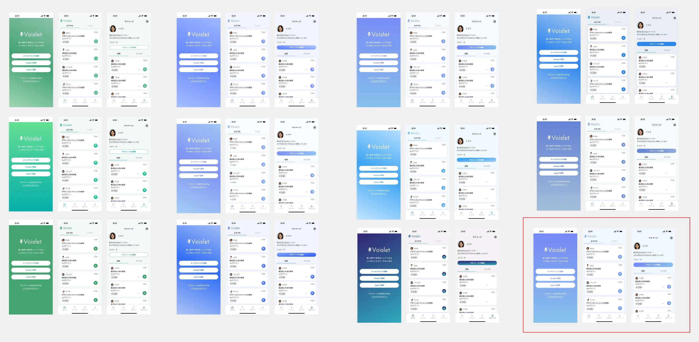
5-2. デザインの精緻化
ビジュアルの方向性を定めた後は、先行して作成していたワイヤーフレームにトンマナを適用し、デザインの精緻化を進めました。 単に色や形を流し込むだけでなく、実際の利用シーンを想定しながら、文字のウェイトや余白の数ピクセル単位のバランス、要素の重なりによる奥行き感などを繰り返し微調整しています。
特に、音声という抽象的な要素を扱うプロダクトであるため、視覚的なノイズを徹底的に削ぎ落としながらも、操作に必要な手がかりが直感的に伝わるようブラッシュアップを重ねました。 プロトタイプ上で実際の画面遷移や操作感を検証し、視覚的なリズムや手触り感を整えることで、当初定義した「心理的な安全性」と「内省的な心地よさ」を、具体的なUIデザインとして高い解像度で実現しています。
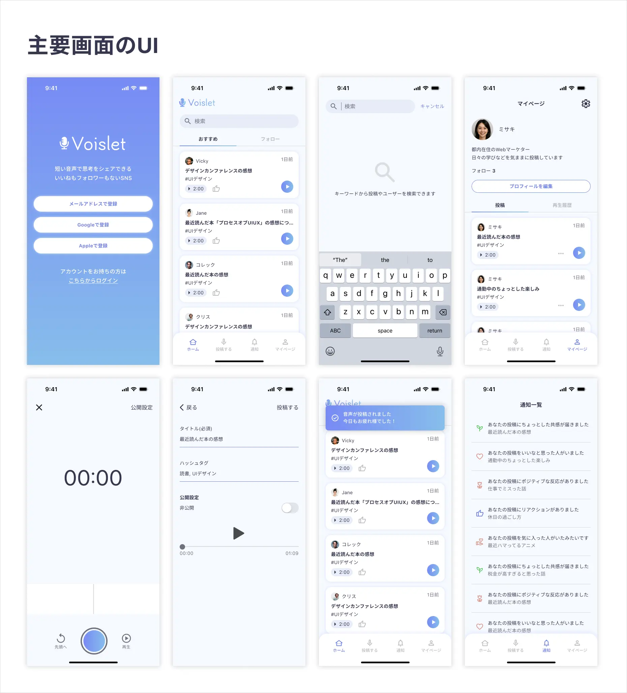
5-3. スタイルガイドの整理
ビジュアルデザインの作成と並行してデザインの一貫性と保守性を高めるためのスタイルガイドを整備しました。 具体的には、スペーシング（余白ルール）、配色、タイポグラフィー、コンポーネント構造、エレベーション、角丸などを体系的に整理し、どの画面でも同じトーン＆マナーでデザインを展開できるように設計しています。 また、各UIパーツをFigmaコンポーネント化し、再利用やバリエーション管理がしやすい設計にすることで、将来的に画面が増えた場合でも、スムーズに拡張・修正できるよう配慮しています。
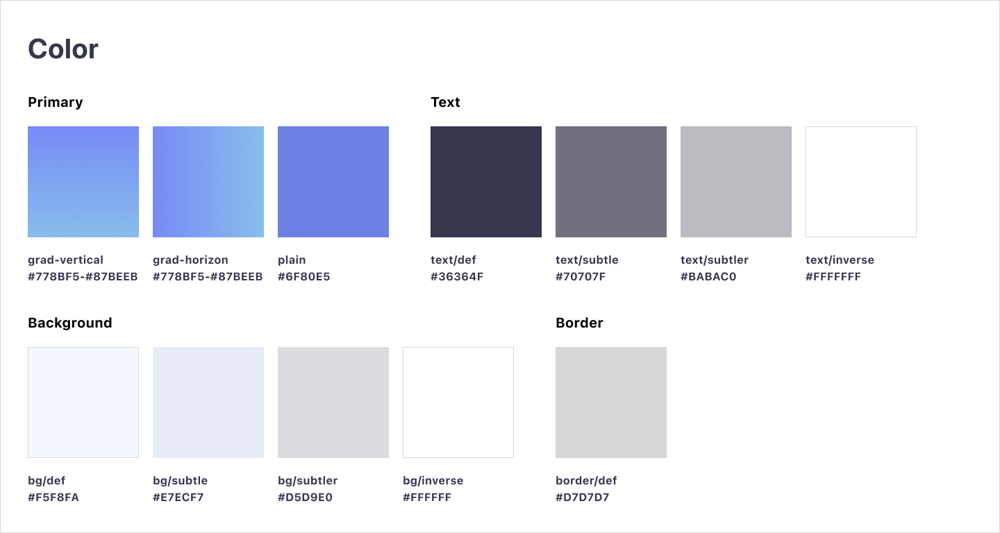
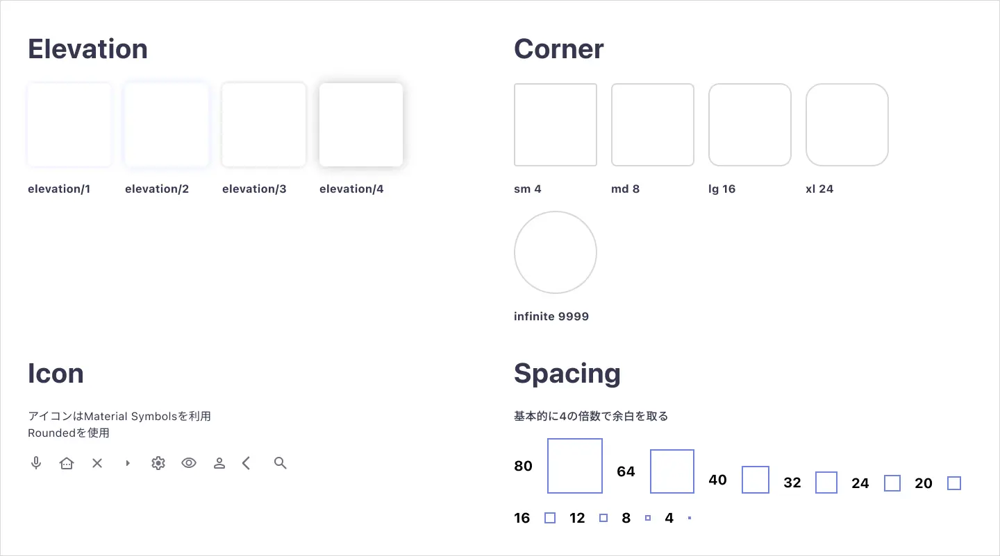
6. 検証改善
制作の最終段階では、設計の妥当性を確認するため、多角的な検証と改善を行いました。 まず、セルフチェックとして簡易的なヒューリスティック評価とアクセシビリティテストを実施し、視認性や操作の整合性における細かな不備を徹底的に洗い出し、ブラッシュアップを重ねています。 さらに、Figmaによるプロトタイプを用いたユーザーテストを行い、具体的な操作感や「心理的安全性」という解決策そのものの妥当性を検証しました。
検証の結果、操作性における課題は微細な調整で解消できたほか、拡散や通知を制限する設計による「心理的安全性」と「共感」のバランスについては、当初の狙い通り高い評価を得ることができました。 一方で、音声投稿という形式特有の課題も浮き彫りになりました。 デザインツール上の検証では限界があるものの、やはり「自分の声を公開すること」自体に根源的な抵抗を感じる層が一定数存在し、それが新たな投稿ハードルになり得るというインサイトを得ました。
この課題を解決するためには、投稿時に音声を加工・エフェクト処理できる機能を追加し、より匿名性を高めるアプローチが有効であると考えています。 また、本制作のテーマである「音声」という前提を一度柔軟に捉え直すならば、今回定義したソリューションを維持しつつ、より心理的負担の少ないテキスト投稿をベースにした形へと展開させることも、ユーザーのニーズを追求する上での有力な選択肢になると捉えています。
終わりに
本プロダクトの設計を通じて、SNSにおける「評価」という概念がユーザーの心理的負担に与える影響を深く考察し、その対極にある「心理的安全性の高い場所」のあり方を模索してきました。
検証の過程では、インターフェースの使い勝手といった表層的な課題だけでなく、解決策の根幹に関わる重要なインサイトを得ることができました。 特に、自分の声を公開することへの根源的な抵抗感については、音声投稿をベースにする上での大きなハードルであり、今後の検討課題として認識しています。 この点については、上述の通り、音声を加工して匿名性を高める機能の追加や、あるいは今回定義したソリューションを横展開し、より心理的負担の低いテキストベースの仕組みへ再適応させるといった、多角的なアプローチによってさらに改善の余地があると考えています。
今回の制作プロセス全体を通じ、特定の手段に固執するのではなく、ユーザーの抱える抵抗感や心理的状況に合わせて、解決策そのものを柔軟に再定義していくことの重要性を学びました。 この経験を、今後のより複雑な課題解決においても活かしていきたいと考えています。